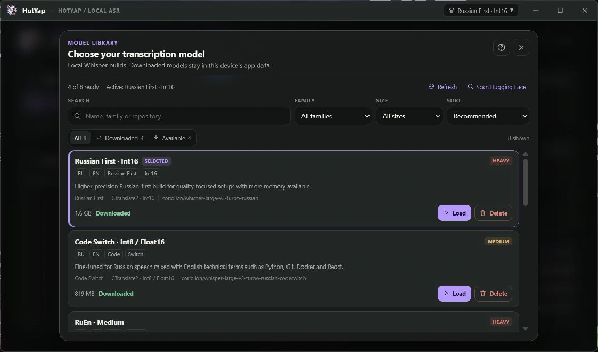

RU + EN
Two languages. One thought.
Dictate in Russian with English technical terms. Recognition context helps preserve names like TypeScript, Docker and useEffect.
RUSSIAN + ENGLISH / VOICE DICTATION
Russian sentences. English technical terms. Dictate tasks, messages and AI prompts — HotYap helps keep your stack’s vocabulary in the transcript.
«Проверь useEffect и обнови Docker-контейнер»
01 / FAMILIAR LANGUAGE. NEW INPUT.
RU + EN
Dictate in Russian with English technical terms. Recognition context helps preserve names like TypeScript, Docker and useEffect.
LOCAL
In local mode, speech recognition runs on your computer. No recording history or telemetry.
PUSH TO TALK
Start recording with a global shortcut. The result goes to your clipboard, ready for a message, document or editor.
INSIDE HOT/YAP · ALPHA.18
Six ways to work, two themes, and controls that fit your day.

Dark · amber
Local models can process phrases during dictation. Show a provisional preview, then choose a full-context final pass or faster completion.

Personal vocabulary
Keep names and technical terms consistent with replacement rules. Add them yourself, review suggestions from your edits, or enable automatic learning.

Review before adding
Switch between project dictionaries. Review terms found in source files before adding them; project rules take priority over your personal dictionary.

Light · blue
Choose the system microphone or a specific device, test its signal locally, and keep system sound unchanged, lowered, or muted while dictating.

Optional automation
Control the preview, finalization, and optional paste into the original active application. Platform checks keep a clipboard fallback available.

Light · blue
Switch between light and dark themes, choose from six accent colors, and keep the same focused dictation workflow.
Real interface, demonstration data. Preview text is refined after recording ends.
03 / THREE STEPS TO TEXT
Default shortcut. Change it in the app.
Use the configurable shortcut or the recording button.
Release the shortcut when you finish. HotYap transcribes the recording.
Paste from the clipboard wherever you need the text.
04 / KEEP CONTROL
Choose a model that suits your computer and your tasks. Download and manage it directly in HotYap.

The details
Yes. Download a local model once, then use local recognition without an internet connection. Cloud recognition and external text processing require access to the selected provider.
No. Local models can run on the CPU. A compatible NVIDIA GPU with CUDA can accelerate recognition. Speed depends on your hardware and the model you choose.
Audio is sent when you choose a cloud speech provider. If you enable external text post-processing, the transcript is also sent to that provider. Both are optional; API keys are stored in the operating system’s credential store.
Installers are unsigned. Linux is the primary tested platform; Windows and macOS builds need broader testing. On Linux Wayland, use the recording button if the global shortcut is unavailable.
Get started
Install HotYap, download a model and try your first dictation.
Choose a download ↗Alpha.18 · Windows, macOS, Linux · Unsigned installers
Linux is the primary tested platform. Windows and macOS builds are available for early testing.